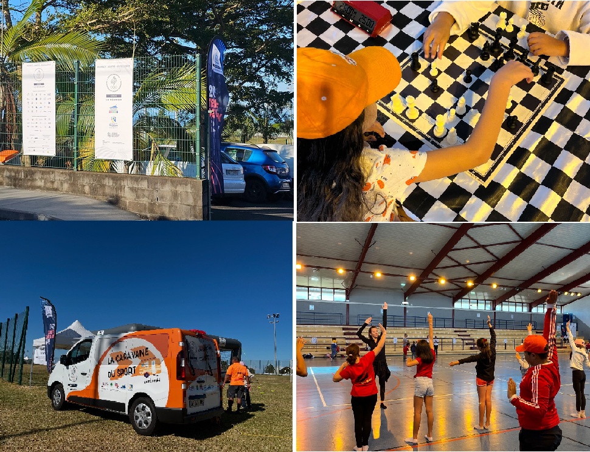

Jeux Olympiques et Paralympiques de Paris 2024
Posté par : Andie THIEUMA le 30 Juillet 2024

Ouverture des Jeux Olympiques et Paralympiques de Paris 2024. Des manifestations diverses et variées...
Posté par : Andie THIEUMA le 30 Juillet 2024
Ouverture des Jeux Olympiques et Paralympiques de Paris 2024. Des manifestations diverses et variées...
Posté par : Henri BIENFAITEUR en date du 26 Juillet 2023

Le CROS et la ville du Tampon ont organisé la Caravane des Sports au Complexe sportif de Trois Mares...
Posté par : Pascale HONNEUR en date du 07 et 08 Août 2022

Sportez-vous au féminin. Les participantes ont eu la chance de participer de nombreuses activités...